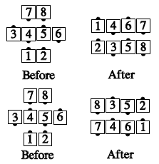

From quarter tag: Scoot Back, then Little or Left Little, according to the hand with which the Scoot Back was done, or outsides go as directed, as in "Scoot and Little, Out on the outside".

© Copyright 1983, 1986-1988, 1995-2017 Bill Davis, John Sybalsky and CALLERLAB Inc., The International Association of Square Dance Callers. Permission to reprint, republish, and create derivative works without royalty is hereby granted, provided this notice appears. Publication on the Internet of derivative works without royalty is hereby granted provided this notice appears. Permission to quote parts or all of this document without royalty is hereby granted, provided this notice is included. Information contained herein shall not be changed nor revised in any derivation or publication.